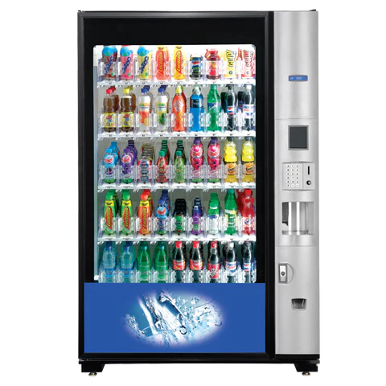
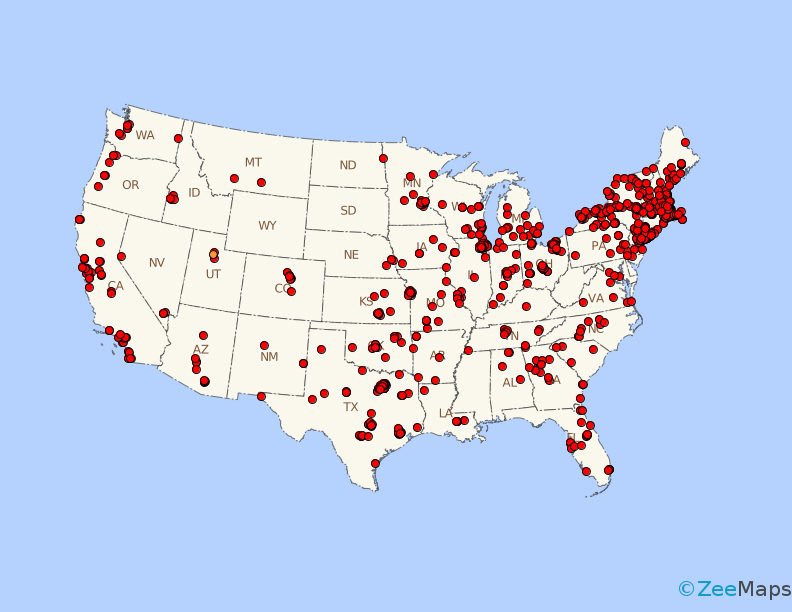

Vending Machine
This site is a public contribution for all vending machine enthusiasts! Submit details of vending machines you find and we will pin them on the map based on the location the users give. You can use our map to find any other vending machines other people have found. Using Google Maps API, you can also find your distances and routes to the coordinates!
Blog
This blog is still underway. However you can check out the server-side blog to find out upcoming content. Click here to view doc form Lab02, or HW02.
The custom datatable will basically contain each user entry of a new vending machine that is found and all its relevant information.
- VendingID, int, primary key
- Image, varchar(1000), (considering NULLABLE)
- Date, Date, (date item was made)
- Coordinates, (either type Geography or decimal, depending on implementation)
- Machine Type, varchar(50), would be able to choose from a select options like : food, drink, dispensery ...
- Description, varchar(500), (user gives any detail about the machine), NULLABLE
- isBillsAndCoins, tinyint/int, (boolean)
- acceptsEPayments,tinyint/int, (boolean)
- Review, int, (out 5 stars basically) , NULLABLE
I got some database experience during my summer internship. I used SQL and Microsoft SQL Management Studio. I never really used the interface that the Studio provided to edit items, more so just for visualizing (SELECT) the table. Always did things through SQL queries.
 The web development experience was also during my summer internship as well as some learning through online resources like CodeCademy and freecodecamp for mostly the basics of JS,CSS,HTML. I worked on a full stack project during the internship with supervision from a senior dev so I did a great majority of the coding of both front and backend development. I used Visual Studio, ASP.NET, and C#, so slightly different backend language from java. But still did the HTML and used libraries like JQuery Datatables. I left the majority of the CSS to Bootstrap with some custom stylings when needed. Used JS and ajax to talk with controller. Used an MVC style.
The easy stuff was all the things related to HTML, they are very straight forward, and when rendered, easy to visualize and understand what things do. The challenging thing is just using css in general in order to get something specifically that you envision. Especially because there are so many options to mess around, it can sometimes be overwhelming to know what to use, how to use it, or if something even exists to achieve a goal. The valuable part however is the CSS guiding that the module presented. Valuable because of the struggle aforementioned. Being able to practice the fundamentals to a "barebones" style to truly understand how it turns out without any extra details on it, allows me to really refresh and refine css elements.